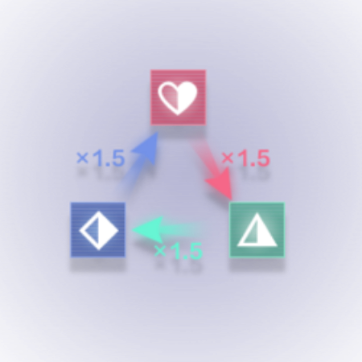
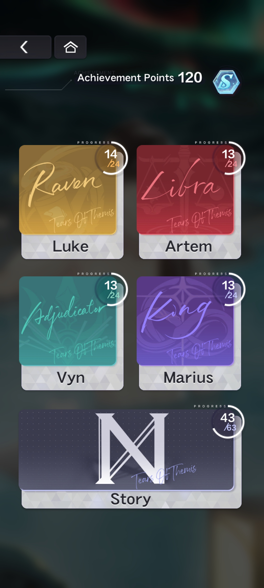
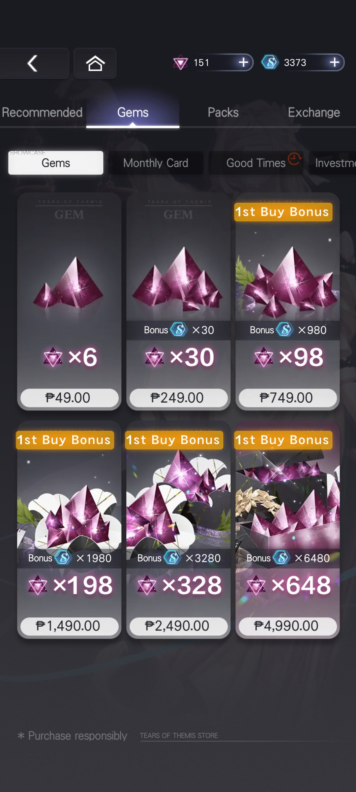
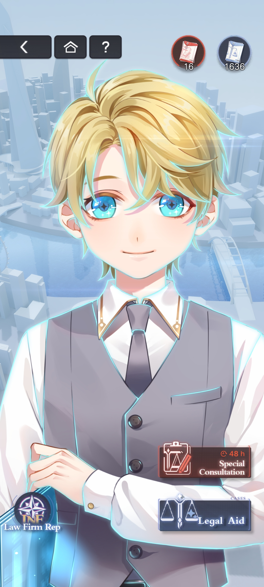
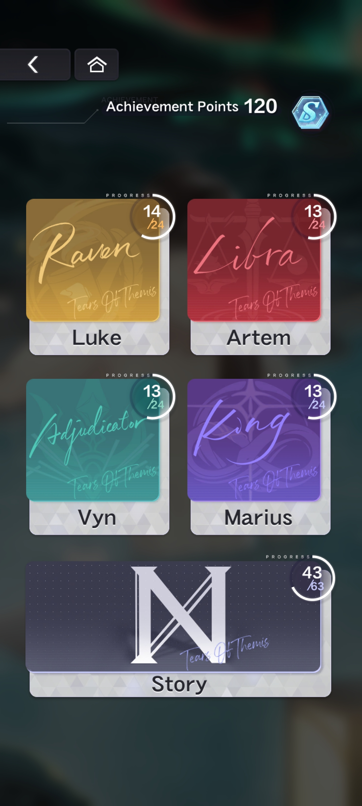
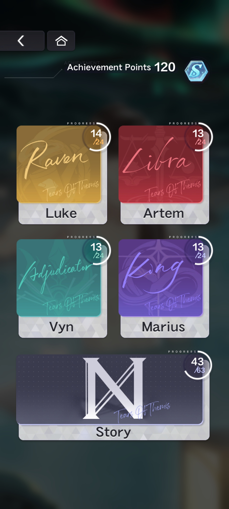

In Tears of Themis, the battle stages are called “debates,” wherein an opponent with HP
(Health Points) will have various arguments against the player. Starting a debate costs AP (most of the time 10 AP).
To win against the opponent, the player attacks each argument individually by selecting their cards to use—it will both
deal damage to the argument and lower the opponent’s HP.
The player has a limited amount of turns to complete the stage; and each card selection counts as a turn.
If the player runs out of cards, they can refresh the deck at the cost of 1 turn.
On the other hand, the opponent counter attacks the player after each turn, dealing damage to lower the player’s HP.
Once all of the enemy’s arguments have been triumphed, the player wins the stage. However,
the player loses the stage if they either (1) run out of turns or (2) their HP reaches 0.
Attributes

Just like other famous games, Tears of Themis also has an attribute system. Attributes are the so-called “type”
of the arguments and cards: Empathy, Intuition, Logic, and Null (only applicable to arguments).
The attribute the player selects will contribute to the amount of damage they will deal during a single attack.
If the player’s card has an attribute that overpowers the opponent’s, the attack will deal 1.5x damage; meanwhile,
if the player’s card has an attribute that is overpowered by the opponent’s, the attack will deal 0.5x damage.
Attacks against the Null or same-attribute arguments will deal 1.0x damage.
Deck Mechanics
A deck is the set of cards the player will use during debates. The deck consists of two parts: Primary Deck and Support Deck.
The primary deck is the set of cards that will be used during debates.
The cards in the support deck help improve the overall stats of the deck, but will not be used during debates.
Furthermore, select skills in some cards may only be activated by placing the card in the support deck.
Shadow of Themis
Tears of Themis is also a game which makes use of a “gacha” system—drawing from a randomized pool of Visions
(manifested into cards) in return for a certain in-game currency (in this case, Tears of Themis—shortened to “Tears” by the fandom).
“Shadows of Themis” are what the banners used for pulling are called, each having its own separate pity count depending on its type.
Tears of Themis
To pull for one Vision, one Tear is required; going by such logic, one ten-pull will cost 10 Tears. If the player
lacks the Tears to pull, 180 S-Chips may be converted in order to gain 1 Tear.
For large-scale events with Event Limited Shadows of Themis, such as Mysteries of the Lost Gold, there are two
kinds of Tears to be used: Special Tears and Limited Tears. The game normally allows the player to convert S-Chips for
Special Tears at a discounted rate (1,440 S-Chips for 10 Special Tears) a number of times during the limited banner period.
To summarize: (note that Special Tears change appearance depending on the event)
Image
Type of Tear
Period of Use
Obtainable Through
Tears of Themis (Regular)
All year-round
Converting S-Chips, Codes, Etc
Limited Tears
Limited Banner Period
Side events during/before the limited event period
Special Tears
Limited Banner Period
Converting S-Chips, event rewards
Pity
The maximum number of draws to guarantee a SSR or SR Vision is called "pity." In all Shadow of Themis banners,
an SR Vision or higher will appear within 10 pulls while an SSR Vision will appear within 100.
A display counter for both SSR and SR pity is on each banner, above the Vision draw buttons.
Once an SR Vision is obtained, the SR pity is restarted. Meanwhile, once an SSR Vision is obtained,
both the SSR and SR pities are restarted.
Vision History
A log of Visions drawn for all kinds of banners can be found through
Profile > Customer Service > Self-Search (Go to the Self-Search page) > Vision Logs.
Note that only the Visions drawn within the last seven days will be displayed.
Types of Shadows of Themis
Permanent
The Permanent Shadow of Themis, also called “permanent banner” by the fandom, is the banner with the largest pool of Visions available;
and is also the only banner that will remain constant throughout the entire year.
Though all Visions have the regular probability distribution when not rated-up, the banner contains the exclusive sports-themed SR Visions
(Luke SR "Moment of Danger," Artem SR "Focus Fire," Vyn SR "Gentleman's Game," and Marius SR "A Dance on the Clouds.").
Probability Distribution
SSR
SR
R
2.00%
11.57%
88.47%
Probability per Vision
SSR
SR
R
0.250%
0.615%
2.701%
Rotation
The Rotation Shadow of Themis, also called “rotation” by the fandom, is a time-limited rate-up of four Visions
from an overall pool of 48. It features two rate-up SSR Visions (the only two obtainable SSR’s in the pool)
and a maximum of two rate-up SR Visions (out of 14 obtainable SR’s). Note that no male lead is featured twice in the
same rate-up banner.
Probability Distribution
SSR
SR
R
1.60%
11.74%
88.66%
Probability per Vision
SSR (rate-up)
SR (rate-up)
SR
R
0.800%
2.935%
0.489%
2.708%
SSR pity makes it so that the player will obtain a new rate-up SSR. Should the player have either all or no rate-up SSR owned,
one random featured SSR is guaranteed within 100 Visions. However, if the player only has one of the
two rate-up SSR’s in possession, they are guaranteed to draw the other SSR within 100 Visions (it is possible to pull the owned
SSR multiple times—though this will not reset the SSR pity until the new SSR Vision is obtained).
This banner makes use of regular Tears of Themis. Furthermore, pity for this banner will carry over to the next rotation.
Event Exclusive
The Event Exclusive Shadow of Themis, also called “2SSR-2SR banner” by the fandom, is a limited-time rate-up of new
Visions in a pool of 48. These Visions accompany a medium-scale event, thus the name “Event Exclusive.”
The mechanics work the same as the rotation banner.
It is notable that the Visions from this banner may have re-runs in the rotation banner, but will not be
obtainable through the permanent banner.
Probability Distribution
SSR
SR
R
1.60%
11.74%
88.66%
Probability per Vision
SSR (rate-up)
SR (rate-up)
SR
R
0.800%
3.522%
0.587%
2.708%
This banner makes use of regular Tears of Themis. Furthermore, pity for this banner will carry over to the subsequent
Event Exclusive Shadow of Themis (2SSR-2SR banner).
Event Limited
The Event Limited Shadow of Themis, also called “4SSR banner” by the fandom, is a limited-time rate-up of four new SSR’s,
where each of the male leads are featured—none of the featured Visions will be obtainable after the event period.
The banner appears alongside a large-scale event.
Draw rates for this banner are increased for the new SSR Visions in a round-robin style, in pairs.
A different pair combination of male lead rate-up will be featured on certain days throughout the event period.
Days before the event period, Tears of Themis will announce a drawing schedule for players to plan ahead their pulls.
Probability Distribution
SSR
SR
R
2.00%
11.57%
86.43%
Probability per Vision
SSR (rate-up)
SSR (other)
SR
R
0.800%
0.200%
0.826%
2.701%
This banner makes use of Limited Tears and Special Tears. Furthermore, pity for this banner will NOT carry over to the subsequent 4SSR banner.
Birthday
The Birthday-Limited Shadow of Themis only appears during a male lead’s birthday event.
It features a rate-up Birthday-limited SSR of the male lead in focus. Two other SSR they feature in, are also present in the pool.
Male Leads' Birthdays
ARTEM WING
MARIUS VON HAGEN
VYN RICHTER
LUKE PEARCE
April 26
June 21
September 27
December 5
Probability Distribution
SSR
SR
R
1.60%
11.74%
86.66%
Probability per Vision
SSR (rate-up)
SSR (other)
SR
R
1.000%
0.300%
0.838%
2.708%
Pity for this banner is lessened to 90 draws. The 90th draw will guarantee the birthday exclusive SSR.
Furthermore, pity count will reset only one the birthday exclusive SSR is drawn, and will carry over to the next birthday banner.
Quests
Daily
Everyday at 03:00 UTC+8, a new day begins for Tears of Themis. Completing these quests will reward the player EXP (experience points)
and Activeness (which will manifest into rewards).
Completing all daily quests and reaching all thresholds of Activeness rewards a total of 6700 EXP per day.
On another note, daily sign-in rewards players for logging into the game for the day. The quantity of the rewards received can vary;
there is an element of luck each day the player logs in, indicated by DAVIS' graphic on the login display.
If DAVIS is:
Seated - player receives the base reward
Standing - reward increases by 50%
Cheering with flowers - reward doubles (note the reward always doubles on Day 26)
If the player purchased the monthly card, then the log-in rewards will be claimed through daily check-in.
Weekly
After completing Main Story 4-18, Weekly Quests are unlocked. These are quests that reset weekly on Monday 03:00 UTC+8 UTC+8.
Just like the daily quests, completing weekly quests will reward the player EXP and Activeness.
Achievements
As the player progresses through the game, they complete achievements and earn rewards such as S-Chips or character level-up material.

Mall
The in-game Mall is where players may purchase packs using real or in-game currency, depending on the product.
Gems
This section of the Mall allows players to purchase Gems, Monthly Card, and the Investment Fund using real currency.
For every 1 USD spent, the player garners 6 P-Points.
Monthly Card
The monthly card is a $4.99 USD (249.00 PHP) purchase lasting 30 days per purchase.
Investment Fund
The Investment Fund is a $9.99 USD (499.00 PHP) pack that gives S-Chips when a player reaches a certain player level.
The pack is retroactive: if a player purchases the pack when they are a higher level, they will also receive the
rewards unlocked from lower levels.
Total Purchases
Players can receive rewards from purchasing items that give P-Points. 1 USD is roughly equivalent to 6 P-Points.
On accumulating a certain amount of P-Points, two Visions may be redeemed—an SR after reaching the threshold of 600 (Artem "Thin Veil")
and an SSR at 5,000 (Marius "Matching Tattoos").

Packs
This section of the Mall allows players to purchase Gems, Monthly Card, and the Investment Fund using real currency.
For every 1 USD spent, the player garners 6 P-Points.
Permanent
As mentioned in the name, permanent packs are purchasable all year-round using either Gems or real currency.
Time-Limited
The following packs are only available for a limited time, typically noted with a red timer banner at the top-left of the pack banner.
These packs usually offer discounted prices than normal, usually appearing alongside events.
Event
These are event-related packs available only during the event period.
Exchange
Where the player can exchange the currency they get from other game modes.
GAME MODES
Main Story
This is the main game mode wherein most of the plot of the game will take place. There are many different game
mechanics for the main story, other than the battle stages.
Story stages include dialogues with the different male leads and NPC’s, interrogation portions, 3D investigation,
and cross-examination of discovered evidence.
To conclude the main story chapter, the player attends a “court trial” and presents the evidence they have
gathered to defend their client. At the end of the trial, the player battles the opposing body one last
time before the stage is completed.
Each debate stage when completed for the first time will provide the player with 40 S-Chips.
Anomaly Levels
Anomaly Levels are harder versions of the Main Story debate stages. The drops also differ per stage as they can drop:
Character Chips
Skill Up items
SR Card Fragments
Each debate stage when completed for the first time will provide the player with 40 S-Chips.
Legal Studies
This is the game mode where the player goes through various debate stages to gain card level up and evolution material.
Each debate stage when completed for the first time will provide the player with 40 S-Chips.
Trials of Themis
Similar to the anomaly stages, players battle in these stages to gain a hefty amount of S-Chips
(amount depending how far the player is in this game mode). The difficulty of the debates increase the
farther the player progresses in the 8-bit art styled game mode. Furthermore, playing through Trials of Themis
will also unlock various difficulties for Temple of Trials
Unlike regular game modes, each level consists of two parts: a debate stage and a rewards portion.
Debate Stage
This has the same mechanics as all the other debates in the other game modes. Defeating the opponent in
this stage will reward the player with S-Chips, as mentioned before.
Rewards Portion
To gain extra rewards, the player will choose one among three possible options.These chests may contain Stellin x1400,
Oracle of Justice II x6, or a Trials of Athena chest.
Trials of Athena Chests are small trivia quizzes that, when answered correctly, will reward the player with both
Stellin and Oracle of Justice II. Otherwise, the player will receive no reward from this stage.
Temple of Trials
Temple of Trials is an extended version of Trials of Themis. For 30 AP, instead of 2 waves, Temple of Trials consists of 30 waves.
The potential rewards for each wave consist of:
Treasure - Varies depending on Temple of Trials difficulty
Debate Stage - Grants S-Chip upon winning
Power Up - Boosts the strength of the player's cards for rest of the run
When auto-debating, the AI will go straight through the middle by default unless moving to encounter a debate stage.
Character Visit
The player can choose to “visit” one of the love interests to interact with him and increase his affection level.
As the love interests’ affection levels increase, more interactions with them are increased. This function is not
available automatically at the start of the game—the love interests are complete in the Character Visit screen
when the player has completed Main Story Chapter 4.
Chat
This is one way to raise the affection level with the chosen love interest. The player taps on the character to interact with them;
alongside playing games with them, such as rock-paper-scissors or Old Maid. Their reactions and dialogues change depending on
where you tap them and how high your affection level is.
Character Story
Character Stories are stages and stories dedicated to each love interest. In a sense, the character stories
are the individual “routes” of the love interests, helping the player get to know the characters and their backstory more.
HOWEVER, to clear debate stages, only the cards featuring the character chosen must be used.
Each debate stage when completed for the first time will provide the player with 40 S-Chips.

Fieldwork
Fieldwork is unlocked after completion of Main Story 04-18.
Introduction
When the player first enters the fieldwork screen, DAVIS will conduct a tutorial for the player to understand the game mode.
There are two categories of Fieldwork:
Legal Aid
Permanently open
Players use AP to conduct debates in any district of their choice to earn ‘Reputation’ for the respective district
Special Consultation
Open for a limited time, during special events (i.e. MR events)
Legal Aid
There are four districts, each associated with a male lead, indicative of where they live:
Waterfront (Artem Wing)
Orchidshine (Marius von Hagen)
Long Beach (Vyn Richter)
South Stellis (Luke Pearce)
Handle cases in each district to increase Reputation in the corresponding district. Each of the four districts
has its own independent Reputation Rating. Increase Reputation for each region to earn rewards. A new currency,
Case Report, can also be earned and used to exchange for rewards in the Mall.
This game mode utilizes a Fatigue system shared between districts. Fatigue is capped at 50 and will reset
every day at 03:00 UTC+8. Players may use 60 S-Chips to temporarily increase Fatigue cap by 20 for the day (limit twice per day).
Special Consultation
The Special Consultation functions almost the same as Legal Aid, with only minimal changes.
GAME DATA
Cards
Cards are the main "units" and collectibles in the game. Each card features a unique illustration of the respective love interest.
They are the core part of deck building and have various mechanics.
Stats
Every card has three sets of stats:
Influence: The attack stat of the card.
Defense: The defense stat of the card.
Power: Indicates the card's total strength based on its level, upgrade tier, and evolution tier.
The rarity of cards also contributes to the overall power of the cards. The rarer a card may be, the stronger it is.
The rarity levels are as follows: SSR > SR > MR > R.
On another note, the only card rarity with non-animated illustrations are R cards. Whereas, SSR Cards are the only
cards that display a short animation upon attainment.
Enhancement
Oracle of Justice and Stellin can be used to level up cards to increase their stats. The amount of Oracle of
Justice and Stellin required increases based on rarity and level.
Evolution
A player can evolve a card at Level 40, and for SR/SSR cards, Level 70 as well. Evolving a card increases a
card's level cap from 40 to 70, and then 70 to 100. New skills will also be unlocked when evolving.
In addition, the card’s illustration will also change when evolving. For SR/SSR cards, the first evolution
will slightly change the card art, while the second evolution will have more visible changes.
Upgrading
When a player obtains a duplicate of a card, they will receive card fragments that can be used to upgrade a
card to increase a card's Influence and Defense up to 4 times. This means a player can pull a card a maximum of
5 times - the initial pull and four more times after - to completely max upgrade a card.
Skill
Card skills can be passive skills that automatically activate at battle start, or active skills which activate when a card is used.
The majority of card skills affect Influence (Attack) or Defense, such as increasing a player's own Influence/Defense,
dealing more damage to the enemy’s argument, or lowering an enemy's Influence/Defense.
To learn more, a tutorial made by Twitter user @MOYlSHENG is available:
Story
Card stories are unlocked when a player reaches certain level thresholds for the card. These card stories
consist of dates and situations with the MC and the featured male lead in the card.
Completing these card stories will also reward S-Chips and increase the Affection level with the character,
which can be claimed when selecting the gift icon on the card from the Card Details screen.
NXX Headquarters
NXX Headquarters is unlocked after Main Story 04-02.
This includes many functions such as Headquarters Level, Resource Requisition, File Room, and Study Room.
To learn more about Study Room, here is another tutorial made by Twitter user @MOYlSHENG:
Included in the Headquarters, the Lounge function is available.
Here, chibi versions of the love interest will appear alongside furniture the player has obtained.
Note that furniture may only be placed down per set, and special sets are obtainable during events.
Character Profile
Character Profiles are used to display the player’s account data and flaunt their in-game possessions.
Invitations
As players progress through the story, they will unlock new Invitations. When selected from the profile,
they not only change the player's profile header, but also the player's default home screen.
Badges
Badges are a cosmetic feature. Players can select badges they've earned to display on their profile.
Namecards
Same with badges, namecards are cosmetic features.
Invitations, badges, and namecards are obtainable through events or Fieldwork (Legal Aid).


 
